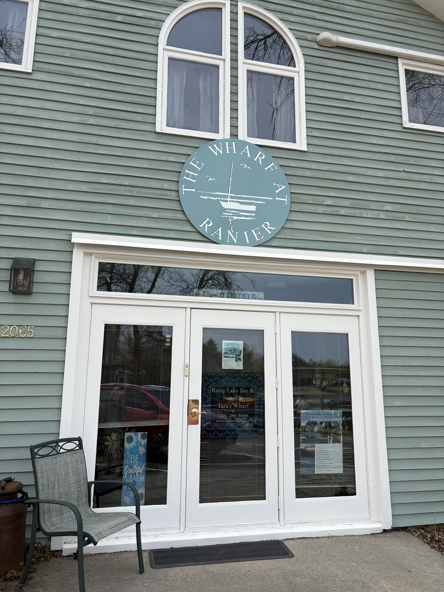
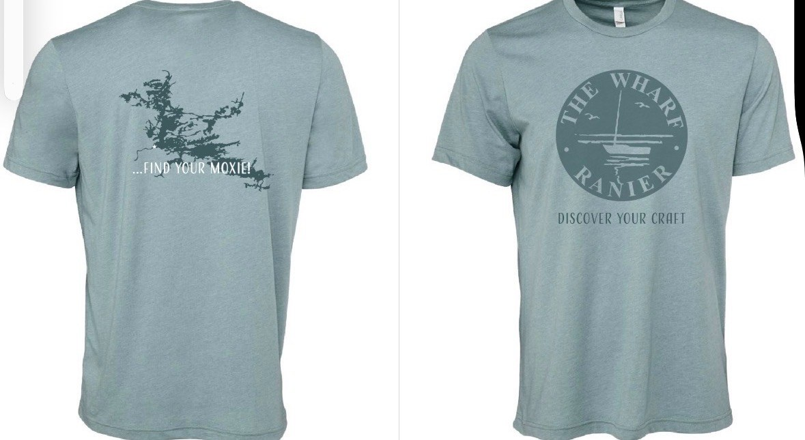
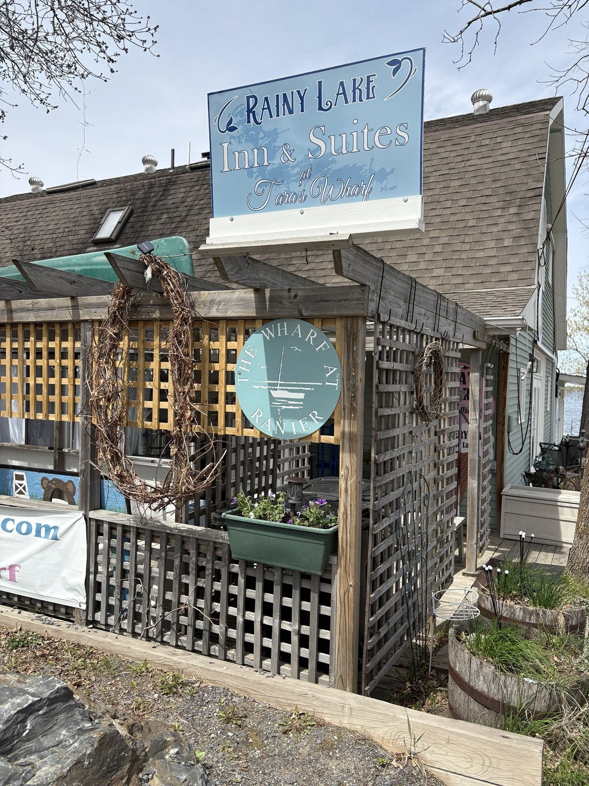
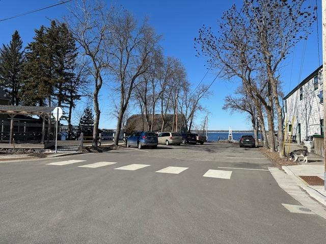
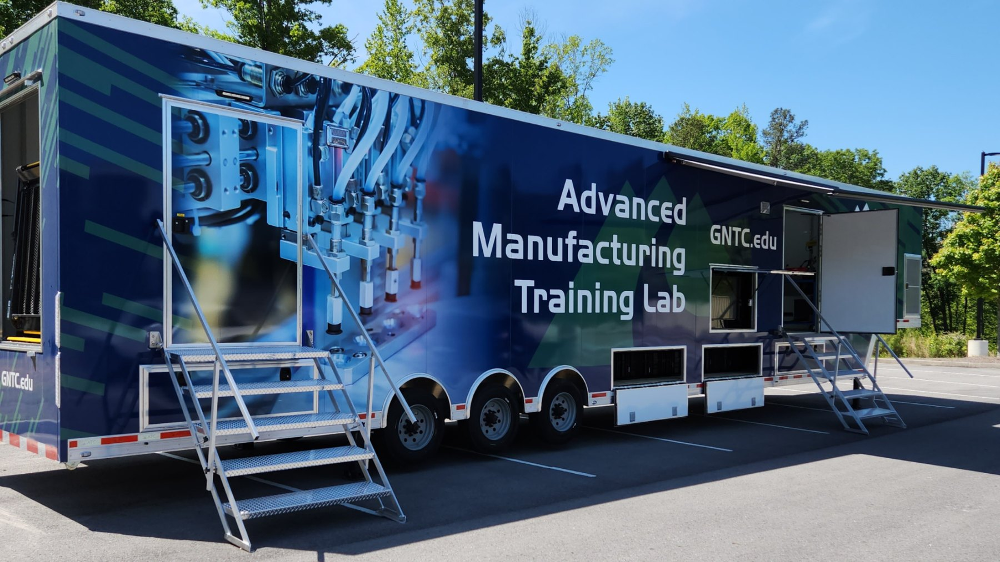

Heritage Arts & Crafts
Rug punching, lino-cut printing, plein air painting, fiber arts, baking, writing, and seasonal folk traditions.

The WharfRanier, Minnesota • Rainy Lake
Where old world moxie meets contemporary craftsmanship through heritage-forward skill building and community advancement.
About The Wharf
Mission: Offering VITAL instruction, training, and apprenticeships to under-supported rural populations — and heritage-forward classes, events, and excursions — towards sustainable tourism and community advancement.
Vision: Revitalization of the Rainy Lake Port of Ranier through heritage, skill, coalition-building, and local environmental and agricultural stewardship.
The Wharf, at Rainy Lake Inn & Tara's Wharf in Ranier, is imagined as a lakefront indoor and outdoor commercial, educational, and gathering space in the historic Port of Ranier on Rainy Lake.
Vital instruction. Heritage-forward learning. Sustainable tourism. Community advancement.
Place-Based Learning
Ranier is a historically vital border town near Voyageurs National Park and the Quetico-Superior boundary waters. The Wharf project builds on the area’s history, natural beauty, community pride, and need for new models of rural vitality.
Classes
Rug punching, lino-cut printing, plein air painting, fiber arts, baking, writing, and seasonal folk traditions.
Carpentry, 3D printing, technology, entrepreneurship, trades exposure, and hands-on learning labs.
Gardening, foraging, paddle craft, tackle building, food traditions, and intergenerational skill-sharing.
Get Involved
We are gathering ideas from future students, instructors, artists, makers, tradespeople, and community members as we build the first season of classes and workshops.
Tell us what classes, skills, workshops, and experiences you would love to see at The Wharf Folk School.
Student Interest FormShare your ideas for classes, workshops, demonstrations, field trips, or hands-on learning experiences you could lead.
Instructor Interest FormCalendar
The crew is busy adding dates and instructors to the calendar-check back soon for final updates.
Summer 2026
Support The Wharf
Your support helps create a community learning space where local knowledge, tourism, creativity, trades, entrepreneurship, heritage arts, and rural revitalization can meet.
Donate Through GivebutterDonations are securely processed through Givebutter. Donors automatically receive a donation receipt.

The Place




Contact Us
We are gathering partners, instructors, volunteers, funders, artists, tradespeople, and community champions.
Staff at the Wharf